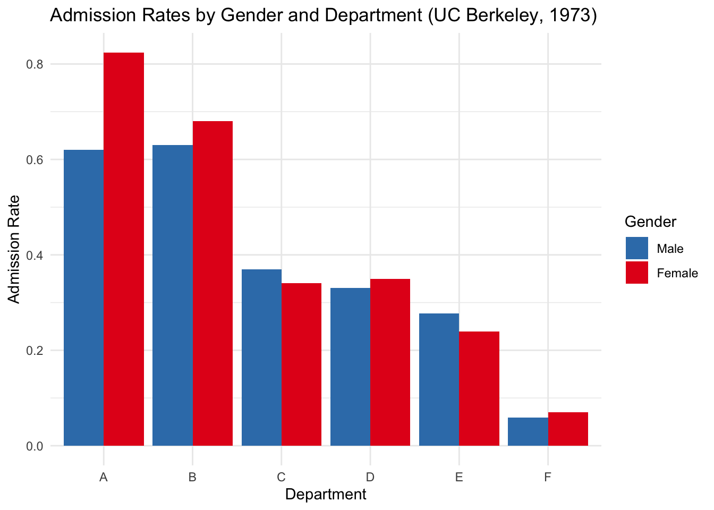

Two salesmen selling identical products walk into a bar…they sit side-by-side
From Weber to Moses: When Firms Can Substitute Inputs
How might a single firm decide where to set up shop?
Discussing the really useful coding tips in Gentzkow and Shapiro (2014)
My thoughts and reflections on the 65th annual conference of the European Regional Science Association.
Discussing the difference between statistical populations and samples
A practical application of some of my earlier posts.
Digging a bit deeper into RStudio
Navigating the installation process of R and RStudio while also introducing you to the RStudio environment.
Qualitative or Quantitative? Nominal, Ordinal, Interval, and Ratio.
Internal and External. Primary and Secondary.
Data describe the universe we wish to study.
statistics is how we learn from evidence.
Thinking statistically doesn’t start with numbers or formulas, it starts with noticing.
Are you struggling to write your thesis?

What if the data you’re analyzing tells one story in aggregate—but the exact opposite when you break it down?
What if the key to transforming urban mobility isn’t the daily commute—but how we get our kids to school?
Have you ever wondered how much your daily commute costs you? This post may provide you with some answers.
Welcome to my website! This post describes what you can expect to find on this platform and how I intend to use it.